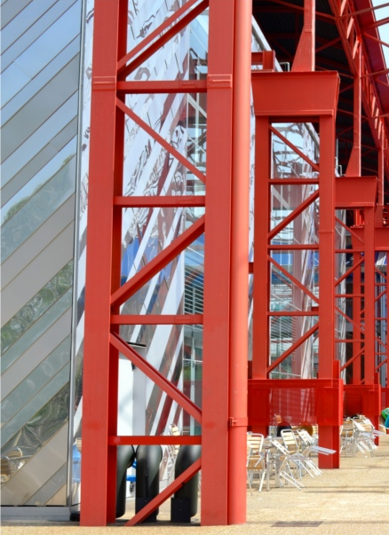

Design School Study Hall, Mirafiori, Turin
Inside Turin's Design School and a part of the Polytechnic of Turin's sustainable mobility. Ex-industrial area FIAT Auto - Mirafiori, the old metallic roof frame was preserved in the construction of three new underlying buildings.